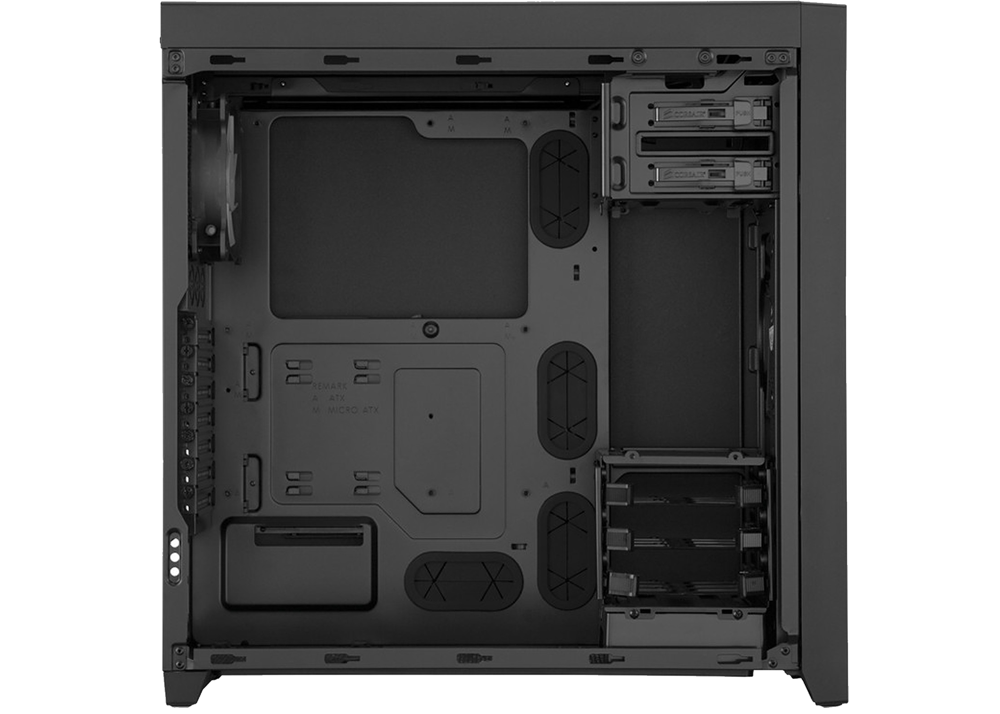

composants
la carte mère est le composant principal du pc, elle relie les composants entre eux. Elle se place au centre gauche du boitier.
le CPU(ou processeur) met en relation les différents composants du pc. Il se situe au centre de la carte mère.
Le ventirad permet de refroidir le processeur en se mettant dessus.
la mémoire ram traite les donnés devant être accessible rapidement. elle se situe à droite du processeur.
le SSD est technologie remplaçant les disques durs conventionnels, ils sont plus rapides mais plus chers.
le HDD(ou disque dur) permet de stocker des données
l'alimentation alimente les différents composants en éléctricité
le GPU(ou carte grapique) s'occupe des calculs et de l'affichages des informations
